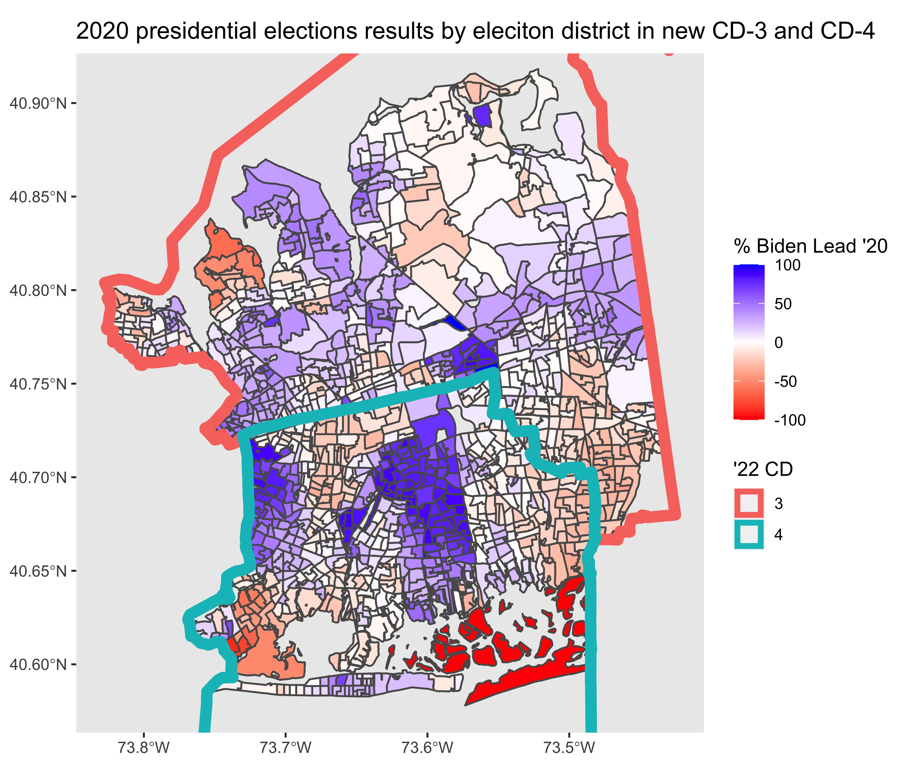
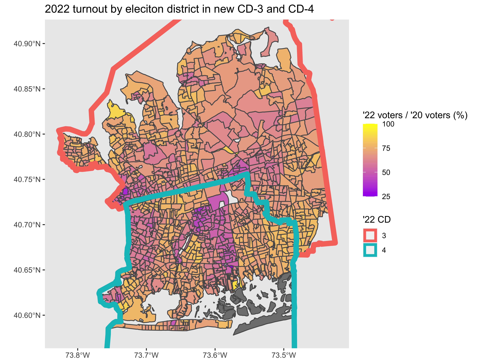
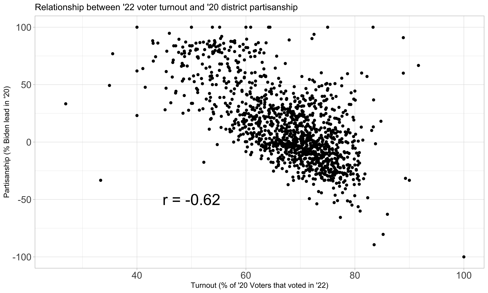

In this blog post, I will use R and Python to analyze voter behavior within two key congressional districts from the 2022 midterm elections. Because district level election results are not available in Nassau County, NY, I will use publicly available voter history data to monitor voter behavior on the level of the individual voter. Data aggregation using pandas in python will enable me to compare voter turnout to historical partisanship at the district level. Combined with geospatial plotting, I hope to observe trends that explain why the voters in these districts performed differently with respect to the nation.
RStudio and VSCode were used as the IDEs for this project (R and Python, respectively). Data in csv, geojson, and shp file types were analyzed. The following packages were used: R/rgdal, R/sf, R/dpylr, R/ggplot2, and python/pandas.
Click here to view all the code used to produce analysis and visualizations below.
I have produced all of the visualizations shown below and links to the corresponding code are included above. All data that was retrieved from outside sources is referenced at the end of the article.
In the United States, midterm elections are held halfway through each presidential term; they provide the public with the opportunity to reshape most federal and state offices through democratic process. Historically, the political party that the President represents will face an unfavorable environment in the midterms, which frequently results in large losses for that party. One popular theory as to why this occurs is that the segment of the public that opposes the actions and ideology of the incumbent president will turnout to vote at a larger rate than the complacent supporters. Leading up to election day in 2022, the presidency is occupied by Joe Biden, a Democrat, producing the expectation from historical precedent that the national environment is favorable to Republicans. Practically this means that Republican candidates are expected to perform better, at the expense of their Democratic counterparts, shifting the outcomes primarily in races that are close.
In 2022, Republicans fell short of historical expectations. They were able to flip the House of Representatives by winning a majority of seats. However, the extent of their gains remained limited. The GOP only gained nine House seats in 2022 relative to the previous term, a meager result compared to the 41 seats gained by House Democrats after the 2018 midterm elections. If only five competitive races had broken differently (which may seem like a lot but many were considerably close), Democrats would have been able to hold onto their House majority. While Democratic candidates were successful throughout the country, two states featured the strength of Republican House candidates that was more in line with historical trends: Florida and New York.
From our SHAVE methodology piece today by @politicsmaps, here's a map of how each state *trended* from 2020 to 2022 at the congressional level. Very difficult to say that Republicans had anything other than a colossal midterm flop relative to expectations. https://t.co/Ib0ACw8BNa pic.twitter.com/ocJgf2IGWV
— Split Ticket (@SplitTicket_) December 14, 2022
Closely related to my other post on the poor electoral performance of Governor Hochul, down-ballot New York Democrats suffered as well in the empire state. This post will focus on two congressional districts, NY-3 and NY-4 (the former which elected the infamous George Santos). Both of these seats were previously held by Democrats who retired ahead of the 2022 election cycle and were won by Joe Biden in the 2020 Presidential election. I anticipate that analysis of district level voting behavior in these congressional districts will help to clarify what went wrong for Democrats in New York in 2022.
United States elections are run on a considerably decentralized system. Voters are broken up into election districts made up of a couple of thousand voters each grouped by geographic proximity. The data on how each district votes is gathered at polling places and then reported upward to the town or county. Then, the county entity will report upward to the state-level board or office. In New York, the state does not (yet) collect election district-level voting information, which practically means election analysts need to rely on each county to provide that level of granular voting data. As one could imagine, some counties are more reliable than others at providing this data to the public, especially for small-time GitHub bloggers.
Luckily, there are other resources we can utilize to make up for this lack of available data. One publicly available resource that is maintained at the state level is a list of registered voters, including data on which elections each voter participated in (also known as voter history). Proper processing of the voter history file will enable us to calculate how many voters participated in each election district in the 2022 general election. Further, we can calculate relative turnout percentages compared to how many voters participated in the 2020 general election as well.
My hypothesis is that poor election results for Democrats manifested in extremely poor turnout of voters in election districts that voted strongly in favor of Democrats in 2020. As the electorate of 2022 likely consisted of a higher turnout of Republicans relative to Democrats, the depression of turnout in areas that voted strongly for Biden in 2020 should provide indication that a Democratic turnout issue was a relevant factor.
One additional relevant challenge to this task involves redistricting. Because we are using a mix-and-match of data relevant to elections held in both 2020 and 2022, it’s important to keep in mind that the state Congressional districts were redrawn between these two elections. As I discuss the methodology, provisions to differentiate boundaries pertinent to different years will be included.
The first map I made with this data displays the results by election district in the 2020 Presidential election. The new 2022 congressional districts are drawn in with bold boundaries to show which communities are housed in each district.

Regions shaded in the darkest blue showed the most voter partisanship preference towards Biden and Democrats. In order to confirm my hypothesis that Democratic voter turnout was pertinent to the rightward shift of these districts, I would expect these dark blue areas to have the lowest relative turnout on the map.
In order to do this, I prepared the following code in Python:
#Importing 2022.11.28 Voter file
#packages needed for all chunks below
import pandas as pd
import re
#List of columns in the original source file
sourcefile_columns = ["Last Name", "First Name", "Middle Name", "Name Suffix", "Residence House Number", "Residence Fractional Address", "Resident Pre Street Direction", "Residence Street Name", "Residence Post Street Direction", "Residence Apartment Type", "Residence Apartment", "Not Standard Residential Address", "Residence City", "Residence Zip Code 5", "Zip code plus 4", "Mailing address 1", "Mailing Address 2", "Mailing Address 3", "Mailing Address 4", "DOB", "Gender", "Party", "Other Party", "County Code", "Election District", "Legislative District", "Town", "Ward", "Congressional District", "Senate District", "Assembly District", "Last Date Voted", "Last Year voted", "Last registered address", "Last county voted in", "Last registered name", "County Voter Registration number", "Application date", "Application source","ID Flag", "ID Verification met", "Voter status code", "Status reason code", "Date voter inactive", "Date voter purged", "Unique NYS voter id", "history"]
#List of columns I intend to be included in the import process
columns_keep = ["Residence City", "Residence Zip Code 5", "DOB", "Gender", "Party", "County Code", "Election District", "Legislative District", "Town", "Ward", "Congressional District", "Senate District", "Assembly District", "Last Date Voted", "Last Year voted", "Unique NYS voter id", "history"]
columns_keep2 = columns_keep.copy()
#Create columns_keep as a list of the index positions of the columns of interest from the original source file
for x in range(len(columns_keep)):
columns_keep[x] = sourcefile_columns.index(columns_keep[x])
#Import of voter file 2022.11.28
filepath = " " #saved to Desktop
voterfile = pd.read_table(filepath, delimiter=',', header=None, usecols = columns_keep, encoding = "ISO-8859-1", dtype={sourcefile_columns.index("Gender"): "category", sourcefile_columns.index("Party"): "category", sourcefile_columns.index("County Code"): "category", sourcefile_columns.index("Election District"): "category", sourcefile_columns.index("Legislative District"): "category", sourcefile_columns.index("Ward"): "category", sourcefile_columns.index("Congressional District"): "category", sourcefile_columns.index("Senate District"): "category", sourcefile_columns.index("Assembly District"): "category",})
voterfile.columns = columns_keep2
#Import 2020 voter file
source_columns2020 = ["Last Name", "First Name", "Middle Name", "Name Suffix", "Residence House Number", "Residence Fractional Address", "Resident Pre Street Direction","Residence Post Street Direction", "Residence Street Name", "Residence Apartment Type", "Residence City", "Residence Zip Code 5", "Zip code plus 4", "Mailing address 1", "Mailing Address 2", "Mailing Address 3", "Mailing Address 4", "DOB", "Gender", "Party", "Other Party", "County Code", "Election District", "Legislative District", "Town", "Ward", "Congressional District", "Senate District", "Assembly District", "Last Date Voted", "Last Year voted", "Last county voted in", "Last registered address", "Last registered name", "County Voter Registration number", "Application date", "Application source", "ID Flag", "ID Verification met", "Voter status code", "Status reason code","Date voter inactive", "Date voter purged", "Unique NYS voter id", "history"]
desired_columns2020 = ["DOB", "Gender", "Party", "County Code", "Election District", "Legislative District", "Congressional District", "Senate District", "Assembly District", "Last Date Voted", "Unique NYS voter id", "history"]
desired_columns2 = desired_columns2020.copy()
for x in range(len(desired_columns2020)):
desired_columns2020[x] = source_columns2020.index(desired_columns2020[x])
voterfile2020 = pd.read_table(" ", delimiter=',', header=None, usecols = desired_columns2020, encoding = "ISO-8859-1", dtype={source_columns2020.index("Gender"): "category", source_columns2020.index("Party"): "category", source_columns2020.index("County Code"): "category", source_columns2020.index("Election District"): "category", source_columns2020.index("Legislative District"): "category", source_columns2020.index("Congressional District"): "category", source_columns2020.index("Senate District"): "category", source_columns2020.index("Assembly District"): "category",})
voterfile2020.columns = desired_columns2
#Create a subset of the voterfile for all voters in the 3rd and 4th Congressional districts
mask = voterfile['Congressional District'].isin(["3", "4"])
voters34 = voterfile[mask]
#Inner merge both files by users with Unique voter IDs
merged_voterfile = pd.merge(voters34, voterfile2020, on='Unique NYS voter id', how='inner')
#Assign GEOIDs to merged voter file
def GEOID(row):
county = int(row["County Code_x"])
county = (2 * county) - 1
if county > 99:
countycode = str(county)
if county < 100 and county >9:
countycode = "0" + str(county)
if county < 10:
countycode = "00" + str(county)
ED = int(row["Election District_y"])
if ED > 99:
EDcode = str(ED)
if ED < 100 and ED >9:
EDcode = "0" + str(ED)
if ED < 10:
EDcode = "00" + str(ED)
towncode = "00"
if county == 59:
town = row["Town"]
if town == "GC":
towncode = "01"
if town == "HEM":
towncode = "02"
if town == "LB":
towncode = "03"
if town == "NH":
towncode = "04"
if town == "OB":
towncode = "05"
if county == 81:
return "36" + countycode + "-" + towncode +str(row["Assembly District_y"]) + EDcode
if county == 59:
return "36" + countycode + "-" + towncode +str(row["Assembly District_y"]) + EDcode
if county == 103:
return "36" + countycode + "-" + str(row["Assembly District_y"]) + towncode + EDcode
else:
return "36" + countycode + "-" + towncode +str(row["Assembly District_y"]) + EDcode
merged_voterfile["GEOID"] = merged_voterfile.apply(GEOID, axis=1)
#Perform counts for each GEOID
counts20 = merged_voterfile[merged_voterfile['Last Date Voted_y'].isin([20201103])]['GEOID'].value_counts()
counts22 = merged_voterfile[merged_voterfile['Last Date Voted_x'].isin([20221108])]['GEOID'].value_counts()
The code above allows me to do a few things. First, I am using a copy of the voter file from just after the 2022 elections, so the “Last Date Voted” variable will enable me to identify 2022 voters more reliably than the actual voter history column, which frequently contains inconsistent markers for different elections. Secondly, I am isolating the voter file just to contain voters who are marked as in the new (2022) NY-3 and NY-4 congressional districts. Next, I generated unique GEO-ID codes that match up with my shapefile to identify each election district using the township name, assembly district, and election district identifier. Importantly here, I used information from voters in the 2020 voter file to identify the election district properties using the 2020 mapping nomenclature (yes, this does not include 2022 voters that were not registered in 2020, but it’s a non-negligible sacrifice I decided to make). Lastly, I can count how many voters participated in the 2022 election by 2020 GEOID and do the same for the 2020 election participation. A ratio of these two participation numbers can provide a relative turnout ratio from 2020 to 2022.
This enables me to produce the following map, highlighting 2022 turnout (relative to 2020) by election district:

As we can see in the map, the same areas that trended strongly Democratic in 2020 (dark blue) are trending with low turnout (purple) in 2022. Don’t just take it from the map. The scatter plot below shows how strongly correlated these two variables are. A strong negative correlation (r = -0.62) was calculated between an election districts partisan favorability towards Biden in 2020 and turnout in 2022 (relative to 2020 turnout).

From this data, we can conclude that relatively low Democratic turnout contributed to Republican wins in the close NY-3 and NY-4 elections in 2022. Republican candidates should expect more of an uphill battle in a political environment where these voters once again participate in voting.
NYSBOE Request for Access to Public Voter Registration Data Page
Presidential precinct data for the 2020 general election - The Upshot/New York Times